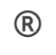
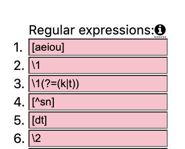

Regular Expressions¶
When the menu option:
is toggled on, you may use regular expressions (regex) to specify which characters should or shouldn’t appear in suggested answers.
Regular expressions are defined in any of 9 boxes. Each pattern should represent a single letter. Regular expressions may back-reference the contents of other regular expressions. For example, \2 refers to what was matched by the pattern’s second regular expression.
Digits specified as puzzle “letters” correspond to that regular assigned that number.
Recommended Answers will respect these regular expressions.
Examples¶
For instance, if the regular expression patterns are:
Then a grid answer may be:
B12-Suggest words that start with ‘B’ followed by two of the same vowels (e.g. “beer”, “boom”, etc.).
B13-Suggest words that start with ‘B’ followed by two of the same vowels that precede either a ‘K’ or a ‘T’, since it specifies that as a positive lookahead (e.g., “book”, “beet”, “boot”, etc.).
-13LNo suggestions! (since we’d need answers which have two of the same vowels that precede either ‘K’ or ‘T’ and that end with an ‘L’).
---4Suggest words that don’t end in either an ‘S’ or an ‘N’.
5-16Suggest words that start with either a ‘D’ or a ‘T’, have a vowel as the third letter and that same vowel as the final letter (e.g., “dcii”, “thee”, “twoo”, etc).